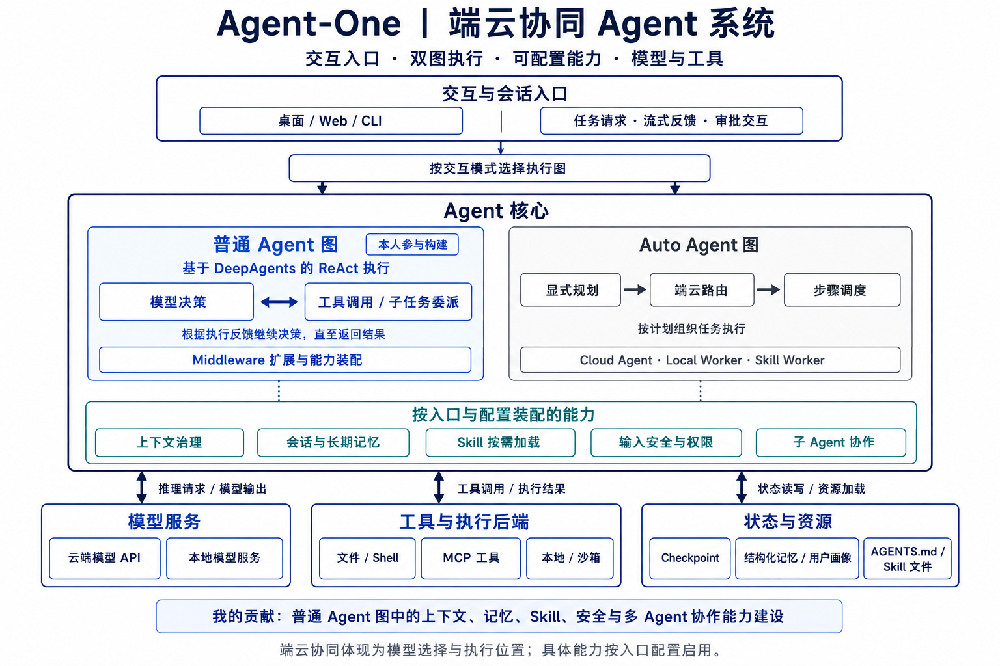
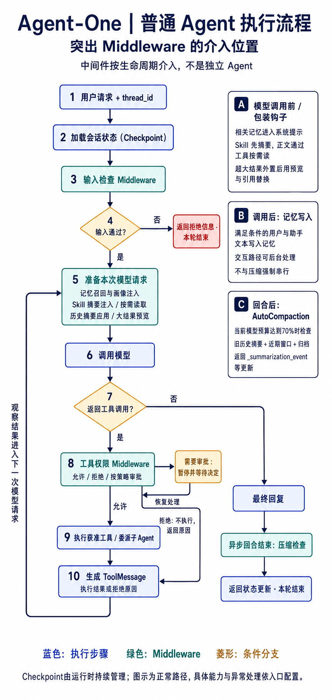
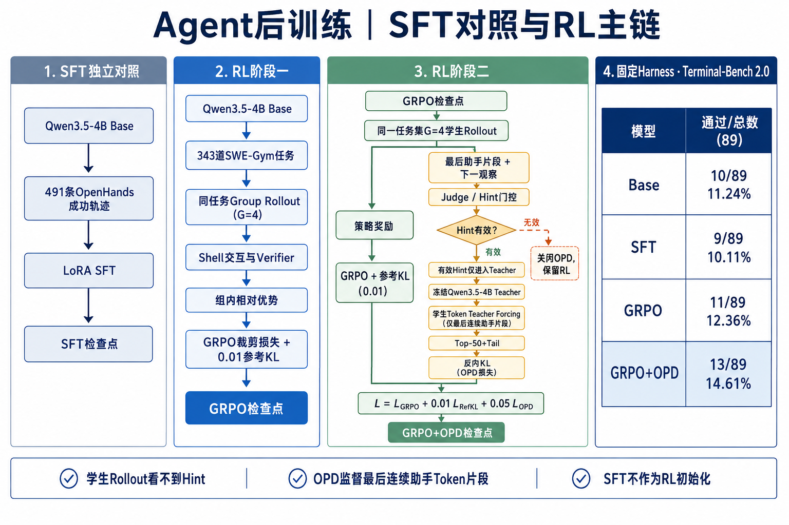

项目背景
Agent-One 是面向 AIPC 的端云协同 Agent 系统，支持调用模型、读取本地资料、执行文件与终端操作。与单轮问答不同，一项任务往往需要多次调用工具、保留中间状态，并检查最终产物是否满足要求。
系统包含普通 Agent 与 Auto Agent 两条执行路径。我在项目启动阶段加入，参与普通图的 Middleware 开发，之后主要负责 Harness / Skill 自进化和 Qwen3.5-4B 后训练。
职责范围：普通图的上下文、记忆、Skill、安全与子 Agent 协作；Auto 图的显式规划、端云路由和步骤调度属于整体架构背景，不计入我的构建贡献。
现有挑战
- 长任务状态难维护。历史消息和工具日志不断增长，模型容易遗漏约束；中断恢复也不能只依赖聊天文本。
- 失败原因混在一起。重复重试、错误路径、缺少验收，可能来自执行机制、Skill 或模型决策。直接改提示词难以判断改动是否有效。
- 修复可能引入回归。候选补丁能应用，不代表任务能通过；修好当前任务，也可能影响其他任务。
- 4B 模型仍有决策短板。运行框架稳定后，模型仍可能选错动作、不会根据测试结果修复代码，需要在可执行环境中训练和验证。
我的方法：三个模块
先建设普通 Agent 的运行能力，再根据执行证据修改 Harness 或 Skill；模型侧单独开展后训练。系统改动和模型改动使用两组对照实验，分别衡量收益。
| 模块 | 输入 | 输出 | 我的工作 |
|---|---|---|---|
| Agent 构建 | 用户请求、会话状态与工具 | 任务结果、产物和运行轨迹 | 参与普通图 Middleware 实现 |
| Harness / Skill 进化 | 运行轨迹、失败证据与当前版本 | 候选补丁 / Skill、评测与版本记录 | 负责归因、受控修改与回归流程 |
| 模型后训练 | 成功轨迹、可执行任务与验证反馈 | SFT、GRPO、GRPO + OPD 检查点 | 负责训练数据、环境、损失接入与评测 |
下面按实际处理顺序展开。普通 Agent 有模型—工具循环，中间件按生命周期介入，并不是三个模块或所有中间件始终串行执行。
模块一：普通 Agent 构建
执行顺序：恢复状态 → 检查输入 → 组织模型请求 → 模型决策 → 工具执行与结果回传 → 回复及回合后处理。

1. 装配普通图，恢复会话
HTTP 入口读取配置、创建模型和工具，再通过
create_cli_agent装配 Middleware、后端和子 Agent，由 DeepAgents 编译执行图。连续请求通过同一thread_id关联 Checkpoint；Saver 保存状态快照和中间写入。恢复的是图状态，不会自动撤销已经写入的文件。具体实现：会话装配与恢复
- 输入：用户消息、运行配置、thread_id，以及可选的 checkpoint_ns / checkpoint_id。会话 ID 决定读哪份历史，不为每次请求随机重建。
- 装配：从配置创建模型、工具目录、执行后端和子 Agent 定义；将选定 Middleware 交给 DeepAgents 编译。开关决定能力是否启用，装配不等于所有钩子都会执行。
- 持久化：通过 aiosqlite 打开会话数据库，加载 cr-sqlite 扩展，创建 checkpoints 和 writes 表；状态快照与任务中间写入分别保存。
- 定位：快照包含父快照关系、序列化状态与元数据；中间写入以任务 ID、channel 和 value 标识。恢复后从图状态继续处理，而非只把旧聊天文本拼进提示词。
- 异常边界：数据库或扩展不可用可能使 Saver 创建失败，不能承诺自动降级。恢复审批要使用原会话；已执行的文件操作不随快照回退。
数据走读：同一会话的第二次请求
教学示例：数值、ID、路径与消息均用于解释；不代表真实运行记录。结构与伪代码已简化。
输入配置 {configurable: {thread_id: "demo-report", checkpoint_ns: ""}} 第一轮：user = "读取销售数据，准备生成报表" 第二轮：user = "继续，保存到 report.csv"逐步解释：第二轮沿用 demo-report，Saver 按会话与命名空间加载可用快照，将新增输入交给图处理。若换成 demo-other，就不再指向前一会话。这里展示的是概念配置与消息，不是数据库序列化格式。
检查点：把 thread_id 换掉后还声称恢复了原任务，是会话关联错误；即使正确恢复，也需确认之前引用的临时文件仍存在。
2. 在输入进入任务前做检查
输入检查中间件读取待处理用户文本，进行规范化、分词与词表匹配。命中规则时返回拒绝信息并跳转结束；未命中则继续。输入检查与工具权限是两层机制，开启工具自动批准不等于跳过输入检查；词表也不代表完整的语义注入防护。
具体实现：输入检查与动作权限
- 读取：在 Agent 回合开始前提取 pending_user_text，扫描器规范化文本大小写，再使用 jieba 或回退分词处理文本。
- 匹配：按词表检查分词结果，并可补充子串匹配；扫描结果包含 blocked、matches、tokens，既记录拦截结论，也保留命中依据。
- 分支：命中时返回一条拒绝消息，并设置 jump_to=end；未命中时不修改图状态，继续运行。
- 独立检查：工具调用随后还要按路径、命令和运行策略判断允许、拒绝或审批。当前装配避免再叠加通用审批机制，以免重复中断。
- 边界：词表匹配存在误报和漏报，也不能自动覆盖所有工具输出中的恶意内容；这里不描述为完整语义检测或自动脱敏。
数据走读：输入通过不等于动作获准
教学示例：数值、ID、路径与消息均用于解释；不代表真实运行记录。结构与伪代码已简化。
教学词表 = ["DEMO_BLOCK"] 用户输入 = "demo_block" 规范化后匹配 → blocked = true 输出概念：拒绝消息 + jump_to = "end" 另一输入 = "整理报表" 输入检查通过 → 模型请求写入某路径 → 工具权限另行判断逐步解释：DEMO_BLOCK 是教学用占位词，不是项目真实敏感词。第一条在输入阶段结束；第二条仍必须经过工具策略，不能因为输入通过就跳过执行权限。
检查点：词表没有命中不能证明文本安全；审批拒绝后应把拒绝原因交回模型，而不是继续执行原动作。
3. 组织记忆、Skill 与上下文
记忆召回根据当前查询和 namespace 取相关片段，加入系统提示；画像独立管理。Skill 按内置、用户、项目来源扫描，解析名称、描述和路径，同名后来源覆盖先来源；先注入摘要，正文由模型按需读取。文件记忆与结构化记忆受入口开关控制，当前 Web 普通图启用结构化记忆，不是所有入口都直接加载 AGENTS.md。
具体实现：记忆与 Skill 的组织
- 记忆查询：取最后一条用户消息作为查询，从运行配置解析 namespace；将 query、namespace、top_k 交给记忆管理器，非空结果才追加到系统消息。
- 画像来源：用户画像独立组织；文件规则记忆与结构化记忆分别受开关控制。当前 Web 普通图关闭基础文件记忆、开启结构化记忆。
- Skill 扫描：依内置、用户、项目顺序遍历 Skill 子目录，读取 SKILL.md 的 YAML 头部，解析 name、description、path，并校验名称等字段；无效条目跳过。
- 覆盖与缓存：以 name 为键逐次赋值，后来源覆盖先来源；合并结果写入 skills_metadata。状态已有此键便跳过扫描，即使值是空列表。
- 模型可见内容：调用前只注入名称、描述和正文位置。模型选中 Skill 后，通过文件工具读取正文，再把读取结果带入后续推理；不是预先注入全部正文。
- 边界：新建 Skill 不一定立即进入已缓存会话；这段扫描与加载本身不是向量检索，allowed_tools 字段也不能单独证明权限已强制执行。
数据走读：Skill 从目录到模型上下文
教学示例：数值、ID、路径与消息均用于解释；不代表真实运行记录。结构与伪代码已简化。
示例目录（不是项目真实路径） builtin/report/SKILL.md user/report/SKILL.md project/report/SKILL.md 项目版头部： --- name: report description: 生成并校验销售 CSV 报表 --- 正文：读取输入 → 生成 CSV → 检查列名与行数 解析结果（简化）： {name: "report", description: "生成并校验销售 CSV 报表", path: "project/report/SKILL.md"} 合并：all_skills["report"] = 内置版 → 用户版 → 项目版 状态：skills_metadata = [项目版元数据] 模型可见摘要（等价示意，非提示模板原文）： report：生成并校验销售 CSV 报表 读取位置：project/report/SKILL.md逐步解释：目录提供正文位置，YAML 提供名称与描述；路径不是要求用户在 YAML 中手填。模型先依据摘要选择，再通过文件工具请求读取该位置；返回的正文作为工具结果加入下一次模型调用。若同一 namespace 召回到“报表列名使用中文”，该记忆另行进入系统提示。
检查点：元数据已有 report 时新建 Skill 不保证触发重新扫描。无效 YAML 条目会跳过；摘要列出文件也不代表读取必然成功。
4. 控制大工具结果，再执行模型—工具循环
当前装配对超过 5,000 字符的工具结果保存全文，以 1,000 字符预览和文件引用替换模型请求中的内容，并用工具调用 ID 去重。模型输出工具调用后先过权限策略，再执行工具或委派子 Agent；结果作为 ToolMessage 回传，进入下一次模型请求。拒绝的动作返回原因，不实际执行。
具体实现：大结果与子任务的数据流
- 扫描：模型请求包装阶段遍历 ToolMessage，提取文本并比较字符长度；当前阈值为 5,000 字符，预览保留 1,000 字符，不是 Token 数。
- 外置：超过阈值后查询 _persisted_tool_results 中的 tool_call_id 映射。首次保存时对调用 ID 做安全字符替换并附短哈希，生成文件名，交给后端存储。
- 替换：请求中的结果改成含原长度、文件路径和预览的引用块；之后相同调用 ID 复用路径。模型如需细节，再通过文件工具读取全文。
- 委派：task 接收 description 与 subagent_type，校验类型后用任务描述创建新的 HumanMessage；父消息列表不直接完整复制给子 Agent。
- 返回：子 Agent 输出状态必须包含 messages；默认取最后消息内容，包装成与父 tool_call_id 对应的 ToolMessage，并按规则合并允许的状态字段。
- 边界：请求视图替换不等于原始状态消息已删除。工具拒绝只回传原因；子 Agent 共享文件时也需要考虑写入冲突。
数据走读：日志外置与子任务返回
教学示例：数值、ID、路径与消息均用于解释；不代表真实运行记录。结构与伪代码已简化。
工具结果：tool_call_id = "call-demo-1"，文本长 20,000 字符 首次：无映射 → 保存全文 状态示意：_persisted_tool_results["call-demo-1"] = "<归档位置>" 模型请求：原长度 20,000 + 前 1,000 字符 + 全文位置 下一次：同一调用 ID → 复用归档位置 子任务调用示意： task(description="检查 report.csv 列名和行数", subagent_type="<已注册类型>") 子消息：[HumanMessage("检查 report.csv 列名和行数")] 返回：ToolMessage(content="<子任务结果>", tool_call_id="<父委派调用ID>")逐步解释：外置保留重新读取入口，父 Agent 根据子任务结果继续决策。示例中的归档位置、类型和消息内容是占位，不是实际工具响应。
检查点：不能把委派的结果绑定到另一个工具调用 ID；若全文文件过期，映射存在也不代表原文可读。
5. 写入可用记忆，检查历史压缩
记忆写入按可用用户与助手文本触发，交互路径可后台处理。自动压缩在异步回合结束后检查当前模型预算，达到 70% 阈值后对旧历史生成摘要，保留近期窗口并记录归档位置，通过 _summarization_event 返回状态更新。摘要失败与归档失败分别处理，不能保证任何异常下都可完整恢复。
具体实现：回合后的记忆与压缩
- 记忆写入：从可用的用户与助手文本提取一轮交互，检查开关、管理器状态和空文本后写入；交互路径可后台执行，短生命周期的非交互路径等待写入。
- 压缩触发：异步回合结束钩子读取当前有效模型窗口，优先用 _context_tokens，否则近似估算。超过 70% 触发阈值才尝试压缩；同步钩子不执行这条压缩路径。
- 重建与切分：先应用上一次摘要事件，恢复有效消息视图；再按 partial 策略划分旧历史与近期窗口。preserve_count=6 还受保留策略影响，不等于固定三轮对话。
- 生成与归档：先生成结构化摘要，再归档旧历史；返回 cutoff_index、summary_message、file_path 等事件字段，同时更新 Token 估计并清除旧健康报告。
- 写回：钩子返回状态增量，由图运行时统一处理，避免内部并发直接抢写 Checkpoint。
- 异常：模型窗口未知时不触发；摘要异常返回不更新。归档失败可能仍保留压缩结果并产生警告，不能保证原文一定可恢复。
数据走读：压缩前后的状态
教学示例：数值、ID、路径与消息均用于解释；不代表真实运行记录。结构与伪代码已简化。
假设当前模型窗口 = 100,000 Token _context_tokens = 72,000 → 超过 70,000 阈值 有效历史 = 旧消息区 + 近期保留区 旧消息区 → 结构化摘要 → 原文归档 状态增量（字段示意）： _summarization_event = { cutoff_index: "<换算到原状态的边界>", summary_message: "<摘要消息对象>", file_path: "<归档位置>" } _context_tokens = "<压缩后估计值>" _context_health_report = None逐步解释：72,000 等数值仅解释阈值判断，不是运行记录。已有摘要事件先应用，再切出可压缩历史；超过阈值但没有合适旧历史，也不能保证压缩生效。记忆写入与这一步各有触发条件，不强制串行。
检查点：摘要生成失败不提交这份更新；归档失败可能仍压缩，所以不能把 file_path 当成无条件可用的恢复保证。
查看普通 Agent 的中间件执行流程

模块二：Harness / Skill 自进化
处理顺序：合并轨迹 → 提取证据 → 判断修改对象 → 生成候选 → 校验与回归 → 审批及版本管理。
1. 把分段轨迹还原到一次任务
从 Langfuse 读取轨迹，先按 session 分组、按时间排序，再用新用户输入与 resume 标记划分轮次。工具审批后的恢复片段接回原轮次，避免把同一会话中的多个任务混成一条。缺失的观察先标记为证据不足，不直接算作模型失败。
具体实现：分段轨迹如何分组
- 输入：Langfuse 原始 Trace，包含 session 标识、时间信息、输入输出与观察片段。
- 归组：按 session 建立分组，再在组内按时间排序；需要按用户轮次分析时启用轮次切分。
- 判定：同时满足“包含用户新输入”与“不是 resume 片段”才关闭旧轮并开启新轮；其余片段追加到当前轮。
- 输出：一轮任务对应一组有序 Trace，保留各原始 Trace 标识供后续证据回查。
- 示例（说明逻辑）：用户请求、工具审批、恢复结果归为一轮；下一次新用户请求另起一轮。
- 边界：缺少 session、用户轮次或工具观察时先标记采集不完整，不把合并后的空字段直接当成执行失败。
数据走读：四段 Trace 还原成两轮
教学示例：数值、ID、路径与消息均用于解释；不代表真实运行记录。结构与伪代码已简化。
同一 session = demo-report，按时间排序： T1 10:00 新用户输入：生成 report.csv T2 10:01 工具审批片段 T3 10:02 resume：返回执行结果 T4 10:05 新用户输入：再生成图表 新轮条件 = has_user_turn AND NOT is_resume 分组输出：第一轮 [T1,T2,T3]；第二轮 [T4]逐步解释：这组时间与 ID 为教学数据。T3 即使包含恢复输入，也不能据此单独当成新用户任务；分组输出继续保留原 Trace 引用。
检查点：如果仅按 session 全部合并，T4 的图表要求可能污染第一轮 CSV 的产物判断。
2. 提取动作、观察和验收证据
提取用户目标、最终响应、工具调用与结果、错误、目标产物路径和验证动作。确定性规则识别缺少工具结果、写入路径错误、未验证产物等现象；EvidencePack 关联 trace、session、Harness 版本和评测记录，并保留原始证据引用。标签提供待验证的修复方向，不等于已经证明根因。
具体实现：从现象形成证据包
- 提取：遍历模型和工具观察，整理用户任务、最终回复、工具调用与结果、错误文本、写入路径以及验证动作，保留原始引用。
- 规则检查：分别判断是否有调用但缺结果、是否要求产物却未见写入、是否写入错误路径，以及是否缺少产物验证；超时现象另作标签。
- 关联：证据包记录 evidence_pack_id、trace_id、session_id、harness_version、eval_run_id、task_instruction、primary_failure_type 和 target_lifecycle_layer。
- 性能分析：区分模型调用与工具执行的耗时，并结合 Token 用量判断主要消耗；不能仅凭总超时就认定工具慢。
- 输出用途：将目标、现象、责任层与证据引用提供给候选生成环节，使修改理由能追溯到一次运行。
- 边界：未观察到写文件不等于已检查磁盘确认文件不存在；部分置信字段为规则赋值，不是校准后的概率。
数据走读：从报表失败构造证据
教学示例：数值、ID、路径与消息均用于解释；不代表真实运行记录。结构与伪代码已简化。
教学观察： 用户目标：输出 report.csv 工具动作：读取 input.csv 模型最终回复："已保存 report.csv" 未观察到：写入 report.csv、读取产物验收 证据字段示意： task_instruction: "输出 report.csv" primary_failure_type: "missing_output_artifact" trace_id: "demo-trace" harness_version: "demo-baseline" 其他证据：缺少产物验证动作逐步解释：规则对比任务要求和可观察动作，形成待验证标签；之后复跑检查真实产物，才能确认修复有效。示例仅列部分证据字段，不是完整生产 EvidencePack。
检查点：不直接把最终回复中的“已保存”当成写入证据，也不凭日志缺失断言磁盘绝无该文件。
3. 区分补 Skill 还是改 Harness
缺少可复用任务步骤时，检索已有 Skill，判断复用、修改或生成候选 Skill；涉及循环、重试、工具协议和完成判断时，将证据映射到 Harness 责任组件。基础设施错误另行排查，不能用模型补丁掩盖环境故障。
具体实现：决定修改对象
- 输入：任务目标、失败标签、证据引用，以及现有 Skill 与 Harness 组件信息。
- Skill 路径：先看已有 Skill 是否能覆盖任务；区分未正确使用与真正缺少步骤，再选择复用、修改或生成候选。不能把一次失败都解释成需要新 Skill。
- Harness 路径：循环、重试、完成判断和工具协议问题先对应到生命周期责任层，再用 Layer Map 指出允许修改的代码范围。
- 模型与环境路径：工具或环境不可用先排查执行条件；固定运行框架后仍存在的决策问题用于后训练分析，不硬归给系统代码。
- 输出：候选类型、修改范围与验收要求，后续再生成候选内容。
- 证据边界：这一步描述项目采用的归因与分流方案；不同候选路径的自动化程度依版本而异，不把它写成已经证明完备的自动分类器。
数据走读：同一个现象的三种处理
教学示例：数值、ID、路径与消息均用于解释；不代表真实运行记录。结构与伪代码已简化。
现象：没有生成正确报表 A：已有报表 Skill，但模型没有读取 → 先分析 Skill 使用与触发 B：读了 Skill，却绕过产物验收直接结束 → 检查完成判断机制 C：工具调用因环境权限失败 → 先修环境或执行权限 候选输出示意： 修改对象 = "完成判断" 范围 = "对应运行组件与聚焦测试" 验收 = "目标 CSV 存在且格式符合要求"逐步解释：这是归因分流的判断示例，不是声称代码对 A/B/C 存在一个完备自动分类器。相同失败表象需要结合动作与观察，不能仅根据一句报错决定生成 Skill。
检查点：缺少证据时应复现或补采集；不能未经判断就把所有失败交给 DebugAgent 改码。
4. 生成候选补丁并限制修改范围
DebugAgent 接收证据与责任层，生成 diff。静态审查检查文件范围、改动规模和需人工复核项，返回 pass、needs_review 或 reject；再用 git apply --check 验证可应用性。检查失败可反馈给模型修补，但新补丁必须重新检查，不能顺带修改评分逻辑来提高成绩。
具体实现：候选补丁的检查过程
- 生成输入：任务证据、目标责任层、允许修改范围和验收建议。输出是候选 diff，而非直接更新线上版本。
- 静态审查：解析受影响路径、增加和删除行数，检查范围和规模限制，并记录错误与人工复核原因。
- 审查输出：pass、needs_review 或 reject，与补丁文件、元数据一起保存；静态通过仅代表可继续检查。
- 可应用性：运行 git apply --check，不修改目标仓库，只检查补丁是否匹配当前文件。
- 修复循环：若失败，把应用错误反馈给模型生成修订 diff；再次走静态审查和可应用性检查，不继承旧版通过结论。
- 应用边界：默认保留候选交人工处理；显式应用分支仍要求审查和可应用性通过。之后的单测、任务评测与发布审批不可省略。
数据走读：候选补丁逐关检查
教学示例：数值、ID、路径与消息均用于解释；不代表真实运行记录。结构与伪代码已简化。
候选 C1：修改允许范围内的完成判断 + 对应测试 静态审查通过 → git apply --check 失败（基线不匹配） 应用错误反馈 → 生成 C2 C2 重新静态审查 → 可应用性通过 → 聚焦单测 → 任务对照 另一候选 C3：顺带修改评分脚本 即使 diff 可应用 → 仍不能绕过范围审查逐步解释：C1/C2/C3 是教学编号。补丁元数据需与对应版本关联，C2 不能复用 C1 的通过结论。apply-check 本身不执行补丁内业务逻辑，也不证明任务修好。
检查点：只有审查通过和可应用性通过也不够发布；仍需任务评测与人工审批。
5. 对照评测后决定是否晋升
聚焦单测后，在相同任务清单与配置下比较 Baseline 和 Candidate。按 case_id 统计失败转通过（F→P）及通过转失败（P→F），结合回归限制决定晋升、复核或拒绝。审批通过后记录版本，保留历史版本供回滚；补丁可应用与版本可发布是两个判断。
具体实现：逐任务回归与版本判断
- 输入：新旧两份逐任务结果，每项至少包含 case_id、passed 与 failure_labels，以及候选想修复的 target_labels。
- 配对：按 case_id 建字典，对共同任务分类为 fixed、regressed、stable_pass、stable_fail。当前代码对集合不一致仅告警并比较交集，所以正式评测前必须核对清单。
- 归类：修复是否命中目标，看基线失败标签；回归是否属于目标症状，看候选失败标签。净修复数为 fixed 数减 regressed 数。
- 决策顺序：出现目标症状回归则拒绝；非目标回归超限则拒绝或人工复核；没有修复、净修复不为正或没有目标修复均需复核，其余条件满足才晋升。
- 版本处理：审批后记录候选与版本变更，保留旧版本用于回退。统计通过不等于已经完成发布。
- 边界：默认非目标回归容忍度为零；版本回滚也不自动恢复任务产生的外部副作用。
数据走读：总分上涨也可能拒绝
教学示例：数值、ID、路径与消息均用于解释；不代表真实运行记录。结构与伪代码已简化。
教学结果：target_labels = ["missing_artifact_validation"] case A：F → P，基线标签命中目标 case B：F → P，基线标签命中目标 case C：P → F，候选标签为非目标错误 fixed = 2；regressed = 1；net_fix = 1 默认 max_off_target_regressions = 0 结论：reject（非目标回归超限）逐步解释：这个例子有净收益，但默认零回归策略仍拒绝。若明确把非目标容忍度设为 1，并且无目标回归、存在目标修复且净修复为正，才可能得到 promote；它仍只是门禁结论，不是自动发布事实。
检查点：两份任务清单不同会比较交集并告警，必须先核对全集，不能直接拿不同分母比较。
示例：任务要求生成 CSV，轨迹中只有读取动作却回复“已完成”。归因先指出缺少写入与验收证据，候选修复补充产物检查，再通过复跑确认。此处是说明处理流程的示例，不作为新增实验成绩。
实现边界：插件注入依赖 Agent 创建入口的参数兼容；当前 loader 与创建函数的接口需按版本核对。历史实验结果不代表任意当前代码组合已完成运行验证。
模块三：端侧模型后训练
实验分支：SFT 是独立对照；RL 主链为 Qwen3.5-4B Base → GRPO → GRPO + OPD，不从 SFT 检查点启动。

1. 准备监督数据和可执行任务
用 491 条 OpenHands 成功轨迹构造 SFT 数据：统一消息角色、控制长度并做精确去重，工具观察作为条件输入，由训练模板生成助手监督位置。RL 使用 343 道 SWE-Gym 可执行任务，不能把成功轨迹条数与任务数混为一谈。
具体实现：监督数据具体怎样转换
- 读取：支持多种轨迹文件和消息字段；通过成功标记、奖励或状态筛选成功轨迹，这一步不是重新执行验证。
- 角色归一：human/user 合并为 user，gpt/assistant/agent 合并为 assistant；工具、终端和环境消息转为带 Observation 前缀的 user 条件消息。
- 长度处理：限制消息数量，过长单条内容保留头尾；对规范化消息序列计算 SHA-256 做精确去重。
- 监督位置：转换后交给训练模板和分词步骤生成助手监督位置。用户与观察供模型理解任务，不直接作为待模仿的输出。
- 数据用途：491 条成功轨迹用于 SFT 独立对照；343 道可执行任务用于 RL，二者不是同一个统计单位。
- 边界：消息截断可能删掉最后修复，头尾截断可能破坏命令；因此原轨迹成功不保证截断后样本依然完整。
数据走读：一条轨迹如何变成 SFT 条件与目标
教学示例：数值、ID、路径与消息均用于解释；不代表真实运行记录。结构与伪代码已简化。
原消息（简化）： human: 修复测试失败 agent: <Shell 动作文本> tool: 1 failed, 3 passed agent: <修复动作文本> 规范化： user: 修复测试失败 assistant: <Shell 动作文本> user: Observation: 1 failed, 3 passed assistant: <修复动作文本> 分词后监督概念： 用户/观察位置 → 不计输出监督 助手生成位置 → 计输出监督逐步解释：示例省略聊天模板标记和实际 Token ID，不能直接当作训练文件。角色转换先做，训练模板再决定最终 Token 监督位置；精确去重对规范化消息序列做哈希。
检查点：如果截断恰好删掉最后的修复，剩下的样本虽来自成功轨迹，也可能只剩失败行为。
2. 在独立工作副本中采样
同一任务采样 G=4 条 rollout。每条建立独立仓库副本，执行初始化命令，再逐轮解析模型输出的 Shell 动作，用子进程执行并回传退出码、标准输出、错误和超时状态。最后运行 verifier_cmd 或 test_cmd；模型说完成不等于验证通过。工作副本隔离不是强安全沙箱。
具体实现：一次真实 rollout 如何运行
- 建立会话：为任务创建带 UUID 后缀的目录，复制仓库时忽略版本目录和缓存，记录 workdir、setup_results、action_results、verifier_result。
- 准备环境：顺序执行 setup 命令并记录结果；当前实现不一定在 setup 非零时立即终止，初始化错误需要单独辨别。
- 生成动作：调用推理服务获得响应，提取文本、处理 reasoning 标记，再解析终端动作；没有有效命令时记录非法动作并反馈。
- 执行反馈：子进程在工作目录执行 Shell，使用超时限制，记录 command、exit_code、stdout、stderr、timed_out；命令超时记录退出码 124。
- 收敛与验证：未编辑就结束可能被约束拒绝；交互结束后优先执行 verifier_cmd，否则使用 test_cmd。多条验证遇失败停止，缺少验证命令返回失败。
- 采样组织：同任务调用四次 rollout；局部收集循环逐次 await，G=4 本身不等于四次并发。独立目录也不等于操作系统级安全沙箱。
数据走读：执行观察怎样回到模型
教学示例：数值、ID、路径与消息均用于解释；不代表真实运行记录。结构与伪代码已简化。
教学任务：修复函数并通过任务测试 rollout-1 → 独立副本 work-<UUID-1> 动作：pytest -q 观察：{exit_code: 1, stdout: "1 failed, 3 passed", stderr: "", timed_out: false} 下一轮：模型读取观察，生成编辑动作 最终验收：运行配置指定的验证命令 rollout-2 → 另一副本 work-<UUID-2>，不沿用 rollout-1 的改动逐步解释：动作示例只用于解释反馈结构，不在网页或本次编辑中执行。每个命令结果记录下来供奖励与归因使用；模型生成 done 不会替代外部验证。
检查点：工作目录独立但进程权限未必隔离；setup 失败、依赖错误或超时不能不加区分地当成纯模型能力问题。
3. 用验证结果打分，整理训练字段
最终验证通过时直接返回成功奖励；失败时再按测试进度、检查与编辑行为给塑形奖励，并扣除非法动作、超时等惩罚。将 tokens、masks、scores 和 inference_logprobs 整理为 ScoredDataGroup 交给训练侧。采样概率来自推理节点，不用重新分词后的概率替代。
具体实现：奖励和训练样本字段
- 首先验收：verifier 存在、退出码为零且未超时，直接返回成功奖励，默认 1.0，不继续叠加过程奖励和惩罚。
- 失败塑形：识别到编辑后才计算测试进度；从输出匹配 passed / failed / errors 数量估算通过比例，乘默认上限 0.45。
- 行为项：测试、查看、编辑默认分别加 0.05、0.03、0.05；前两项按是否出现计一次，不按重复命令无限累加。
- 惩罚项：无编辑、无动作、非法动作和超时等扣分，最后裁剪到默认 [-0.5, 1.0]。这些是默认值，实际运行配置可覆盖。
- 组装数据：从推理服务训练节点读取 tokens、masked_tokens 和 logprobs，与分数按轨迹组成 tokens、masks、scores、inference_logprobs 四组字段；优势与参考概率由训练侧处理。
- 边界：当前取最后训练节点，需要结合服务节点语义确认历史监督范围；启发式测试文本解析可能重复计数，也可能被伪造输出影响。
数据走读：手算奖励与字段对齐
教学示例：数值、ID、路径与消息均用于解释；不代表真实运行记录。结构与伪代码已简化。
教学失败轨迹：识别到编辑、查看、测试；测试通过比例 50% 默认奖励：0.50×0.45 + 0.05 + 0.03 + 0.05 − 0.05 = 0.305 前提：最终验证失败，无非法动作、无超时 若最终验证通过 → 提前返回 1.0，不再算上述行为项 四条轨迹组成训练组（形状示意）： tokens: [长度L1, 长度L2, 长度L3, 长度L4] masks: [对应L1, 对应L2, 对应L3, 对应L4] inference_logprobs: [对应L1, 对应L2, 对应L3, 对应L4] scores: [R1,R2,R3,R4]逐步解释：0.305 是按默认参数计算的教学值，不是实验成绩。组内长度可不同，批处理阶段再整理；Token、掩码与采样概率必须保持位置对应，不能单独截断一个字段。
检查点：原始 mask 的取值约定以推理服务为准，不能把本文的逻辑“监督/不监督”直接当成实际整数编码。
4. 计算 GRPO 策略目标
训练侧按同组奖励计算相对优势，通过当前策略与采样策略的概率比率构造裁剪目标，并加入冻结 Base 的参考 KL。实验采用 Clip=0.2、参考 KL 系数 0.01。组内全部同分时策略优势可能为零，因此还需检查采样是否产生有效差异。
具体实现：GRPO 的计算细节
- 奖励归一：同组四条轨迹分别有奖励 R；计算组均值 μ 与标准差 σ，用 (R−μ)/(σ+ε) 得到组内相对优势。
- 概率对齐：保留 rollout 当时的对数概率，训练前向得到当前策略对相同 Token 的对数概率；两者相减后取指数得到比率 r。
- 裁剪目标：比较 r×A 与 clip(r, 0.8, 1.2)×A，取较小项构成待最小化的负策略目标。训练掩码决定哪些位置参与损失。
- 参考约束：冻结 Base 计算参考概率，加入系数 0.01 的参考 KL，用于限制策略相对 Base 的偏移；与限制单次更新的裁剪目标作用不同。
- 同分情况：同组全部同分时相对优势为零，策略项没有组内区分信号；参考 KL 仍可能产生梯度。
- 实现边界：环境负责整理训练数据，策略损失由外部 Atropos Trainer 计算；不能把环境端逻辑描述为自行重写全部训练器。
数据走读：优势与 Clip 的数值例子
教学示例：数值、ID、路径与消息均用于解释；不代表真实运行记录。结构与伪代码已简化。
教学奖励 R = [0,0,1,1] 均值 μ = 0.5 若用总体标准差 σ = 0.5 → A ≈ [-1,-1,1,1] （仅为易算示例，训练器标准差约定需按实际版本核对） 某受监督 Token：A = 1，r = 1.3 原项 = 1.3；裁剪项 = 1.2 策略损失贡献 = -min(1.3,1.2) = -1.2 若 A = -1，r = 1.3： 策略损失贡献 = -min(-1.3,-1.2) = 1.3逐步解释：负优势情况下也必须按 min 计算，不能无论符号都把比率简单截断后使用。这里是单 Token 示意，实际训练还涉及掩码、序列归约与参考 KL。
检查点：概率比率比较的是同一动作 Token 的当前概率与采样时概率；Clip 不是“模型参数最多变化 20%”。
5. 对齐 OPD 的 Teacher 监督
取最后助手响应及紧邻的环境观察，由 Judge 判断 Hint 是否有效。有效 Hint 只加入 Teacher 上下文副本，Student rollout 不读取。Teacher 对学生最后连续训练片段的 Token 打分，返回 Top-50 概率；回填到学生序列位置，其余概率合成 Tail，计算 Student 到 Teacher 的反向 KL。无效 Hint 不参与该部分监督。
具体实现：Teacher 监督的对齐与 KL
- 选择片段：从消息末尾寻找最后助手响应，取其之前的上下文和之后第一条用户或工具观察；不必然等于完整最终验证输出。
- Hint 门控：Judge 判断是否提供有效纠错信息；有效时深拷贝上下文，将 Hint 加入 Teacher 的用户消息，原学生 rollout 不被修改。
- 定位目标：从学生训练掩码找最后连续训练片段。Teacher 对该段学生 Token 做条件打分，返回每位置 Top-k Token ID 与全局对数概率。
- 位置回填：若学生全序列长 L、目标段长 M，Teacher 返回 M 行，把它们写回学生对应位置，其他位置为空；批量 padding 后才形成 B×L×K 张量。
- 分布计算：学生 logits 对全词表做 log-softmax，再按 Teacher 的 Top-50 ID 取相同 Token 的概率；双方剩余总概率分别合成一个 Tail 类别。
- 损失与异常：对有效位置计算 Σp(log p−log q) 加 Tail 项并平均。无效 Hint 关闭该监督；Teacher 异常是否继续 RL 依 fail-open 配置。Tail 保留总质量，但不区分尾部各 Token。
数据走读：OPD 的位置、Tail 与 KL
教学示例：数值、ID、路径与消息均用于解释；不代表真实运行记录。结构与伪代码已简化。
教学序列长度 L=8，逻辑监督位置： 位置: 0 1 2 3 4 5 6 7 监督: 否否是是否否是是 最后连续训练段 = [6,7]，不是 [2,3,6,7] Teacher 上下文加 Hint 后长度改变，但两行监督仍回填学生位置 6、7 生产 Top-50：单样本目标段 M×50 → 回填 L×50 → 批处理 B×L×50 为手算，缩为 Top-2 + Tail： 类别 Token-a Token-b Tail Student p 0.4 0.3 0.3 Teacher q 0.5 0.3 0.2 KL(p||q) = 0.4 ln(0.4/0.5) + 0.3 ln(0.3/0.3) + 0.3 ln(0.3/0.2) ≈ 0.03238逐步解释：逻辑监督表不代表原始 mask 编码；8 个位置也不是真实分词结果。Top-2 只用于计算演示，实际配置仍为 Top-50。Teacher 只对学生目标 Token 条件打分，不让学生在生成时看到未来观察。
检查点：不能把 Teacher 增长后的绝对位置直接贴到学生序列；也不能将 Top-50 概率重归一化为 1，否则丢失 Tail 质量。
6. 更新、保存和统一评测
OPD 以 0.05 系数加入已包含参考 KL 的策略目标，再反向传播并更新训练参数。保存 LoRA Adapter 时记录对应 Base，部署合并时核对 tokenizer 与模板；训练权重还需同步给采样端，避免策略版本滞后。最后固定 Harness，对 Base、SFT、GRPO 和 GRPO + OPD 分别评测。
具体实现：反传、权重与部署
- 批量目标：先 padding Teacher Token ID 和概率，用有效标记区分真实条目与填充值，避免填充值参与 KL。
- 联合目标：策略与参考 KL 已包含在 policy_loss 中，再加 0.05 倍 OPD。辅助损失函数不会自动补齐调用方漏掉的参考 KL。
- 更新顺序：清空梯度 → 计算总损失 → backward → 梯度裁剪 → optimizer.step；无有效蒸馏位置时返回依赖学生 logits 的可微零值。
- 参数范围：LoRA 训练需要冻结 Base 并正确设置优化器参数组；存在一次反向传播并不能证明只有 Adapter 被更新。
- 部署核对：保存 Adapter 时保留 Base 标识，合并使用匹配 Base，并核对 tokenizer、聊天模板和推理配置。采样端必须使用对应更新后的权重，否则产生 Policy Lag。
- 证据边界：当前代码有真实反向传播辅助函数；是否每个训练步骤均接入、采样权重是否及时同步，还要结合历史启动版本和训练日志验证。最终结果采用本人确认的历史口径。
数据走读：一次联合更新怎样组成
教学示例：数值、ID、路径与消息均用于解释；不代表真实运行记录。结构与伪代码已简化。
教学标量（非训练日志）： L_GRPO = 0.20，L_RefKL = 0.04，L_OPD = 0.03238 L_total = 0.20 + 0.01×0.04 + 0.05×0.03238 = 0.202019 更新顺序（等价伪代码）： 清空梯度 总损失.backward() 裁剪梯度 优化器.step() 保存 Adapter，并核对采样端版本逐步解释：参考 KL 已包含在 policy_loss 的调用约定里，不应再次重复加入。无效蒸馏位置使 OPD 项为可微零值，但 RL 项仍可更新。仅打印出非零 loss 不能证明指定 LoRA 参数发生了有效更新。
检查点：权重同步是否成功需以实际版本、加载状态和训练记录核对；这里不虚构自动同步握手协议。
最终结果
Terminal-Bench 2.0 共 89 道任务。两组实验分别固定模型或 Harness，系统收益与模型收益不相加。
| 版本 | 通过任务 | pass@1 |
|---|---|---|
| Harness 基线 | 36/89 | 40.45% |
| Harness 进化后 | 66/89 | 74.16% |
净增 30 道任务，提升 33.71 个百分点。
| 模型 | 通过任务 | pass@1 |
|---|---|---|
| Base | 10/89 | 11.24% |
| SFT（独立对照） | 9/89 | 10.11% |
| GRPO | 11/89 | 12.36% |
| GRPO + OPD | 13/89 | 14.61% |
GRPO 较 Base 多通过 1 题；加入 OPD 后较 GRPO 多通过 2 题。最终较 Base 净增 3 题，提升 3.37 个百分点。SFT 对照未带来提升，因此不写成各阶段持续提高。
以上为本人确认的历史实验结果；本次页面重构未重新运行训练或评测。
局限与后续改进
- 训练覆盖有限：343 道任务的规模与仓库分布限制了泛化判断，需要增加仓库类型及跨仓库评测。
- 奖励有启发式成分：命令识别和测试输出解析可能误判，应补充更可靠的执行证据，检查刷分行为。
- 结果规模较小：后训练只净增 3 题，需要多随机种子和逐任务分析，不能直接宣称统计显著。
- 恢复有边界：Checkpoint 与版本回滚不会自动撤销外部文件变化；临时归档的生命周期、插件接口兼容和采样权重同步都需单独验证。